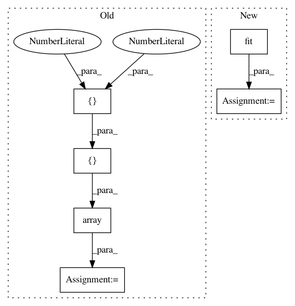

f78f4d1eb72309c8046b1469e30a7174fa115eed,examples/plot_kmeans_poincare_disk.py,,main,#,20
Before Change
//labels = kmeans.predict(X=merged_clusters)
centroids = gs.array([[0,0] ,[0.5,0.5]])
visualization.plot(
centroids,
ax=ax,
After Change
init="random",
)
centroids = kmeans.fit(X=merged_clusters, max_iter=1)
//labels = kmeans.predict(X=merged_clusters)
//centroids = gs.array([[0,0] ,[0.5,0.5]])
In pattern: SUPERPATTERN
Frequency: 3
Non-data size: 6
Instances
Project Name: geomstats/geomstats
Commit Name: f78f4d1eb72309c8046b1469e30a7174fa115eed
Time: 2020-01-23
Author: hadizaatiti@gmail.com
File Name: examples/plot_kmeans_poincare_disk.py
Class Name:
Method Name: main
Project Name: nipy/dipy
Commit Name: f6c10c53a483ff323359d5a6d7a1c54bd65e2753
Time: 2016-08-29
Author: rafaelnh21@gmail.com
File Name: dipy/reconst/tests/test_fwdti.py
Class Name:
Method Name: test_fwdti_predictions
Project Name: geomstats/geomstats
Commit Name: 5da96bc305e17265caf31e9c8216f66e804d456f
Time: 2020-01-23
Author: hadizaatiti@gmail.com
File Name: examples/plot_kmeans_poincare_disk.py
Class Name:
Method Name: main